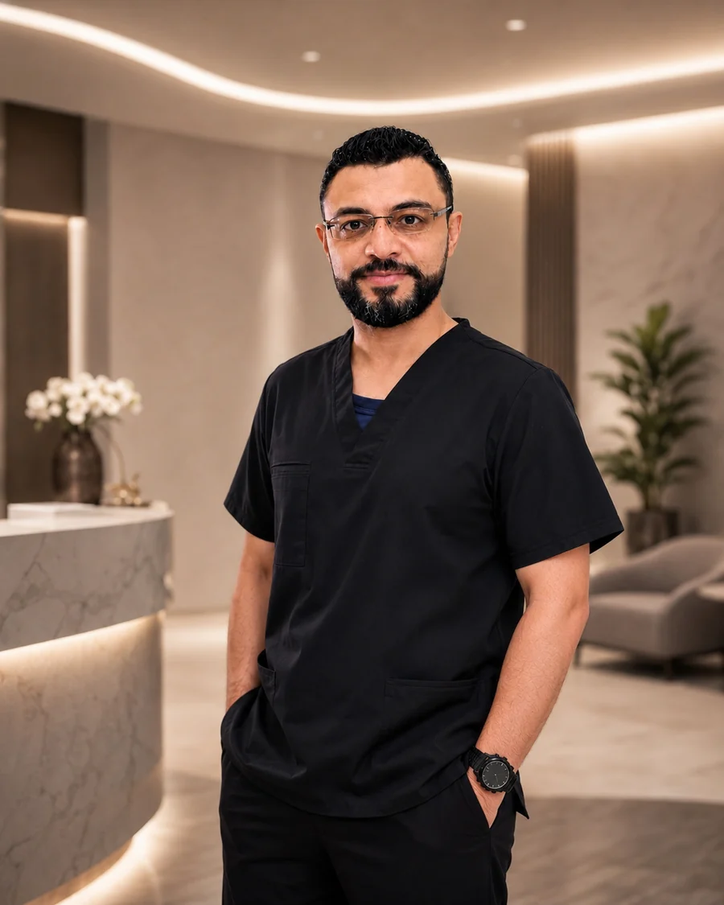
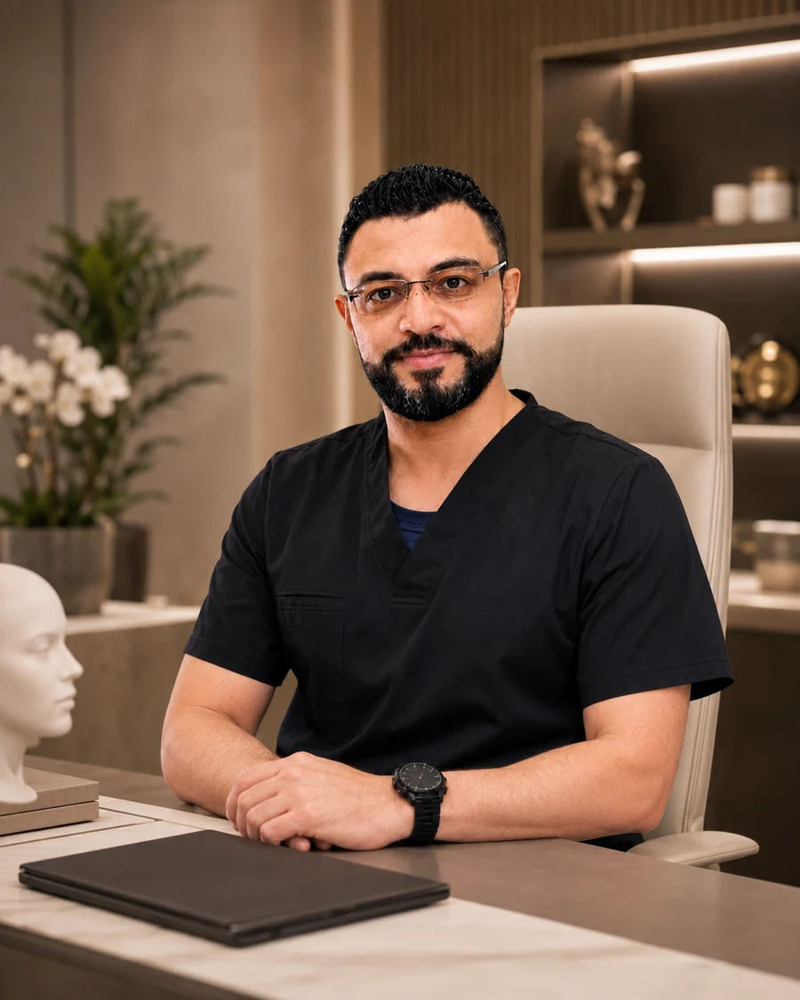
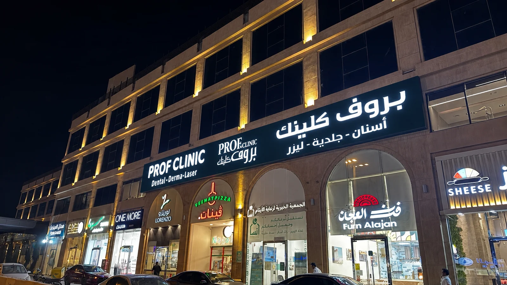

01
نحت الخصر
إعادة إبراز التناسق وتحديد الانحناءات وفق تقييم دقيق لبنية الجسم.
استشارة دقيقة، خطة مخصصة، ومتابعة طبية متكاملة مع خبرات متقدمة في جراحات الوجه والجسم.
كل إجراء يبدأ باستشارة فردية لتحديد الخيار الأنسب بناءً على التقييم الطبي، وبنية الجسم، والنتيجة الواقعية المتوقعة.
إعادة إبراز التناسق وتحديد الانحناءات وفق تقييم دقيق لبنية الجسم.
تقييم السبب ووضع خطة مناسبة لتحسين شكل الصدر واستعادة التناسق.
استهداف التراكمات العنيدة لتحسين محيط البطن والجانبين بشكل متوازن.
تحسين محيط الفخذين وتناسقهما مع بقية الجسم وفق الخطة الطبية.
تصحيح التراكمات الموضعية وتحسين الخط الخارجي للساقين بتوازن.
تعديل مدروس يراعي تناسق الملامح والوظيفة التنفسية والهوية الطبيعية.
تحسين موضع أو شكل الأذن لتحقيق انسجام أكبر مع الوجه والرأس.
تحديد منطقة أسفل الذقن وإبراز خط الفك وفق درجة الترهل وجودة الجلد.
معالجة علامات الترهل وإعادة تحديد الملامح مع الحفاظ على تعبير طبيعي.

دكتوراه وأستاذ جراحة التجميل
خبرة طبية وأكاديمية تجمع بين التخطيط الدقيق، وضوح التوقعات، والحرص على الوصول إلى نتائج متوازنة تناسب كل حالة.
لا نبدأ بالإجراء؛ نبدأ بالاستماع. نفهم الهدف، نقيّم الحالة، ثم نناقش الخيارات والنتيجة الواقعية وخطوات التعافي بوضوح.
استشارة وتقييممناقشة الهدف والتاريخ الطبي والتوقعات.
خطة مخصصةاختيار الإجراء الأنسب وتوضيح الخطوات.
متابعة مستمرةإرشادات قبل الإجراء وبعده ومتابعة التعافي.

تتوفر خيارات الدفع عبر تابي وتمارا وفق الأهلية والشروط المعتمدة لدى مزود الخدمة.
أرسل بياناتك وسيقوم فريق بروف كلينك بالتواصل معك لتنسيق الموعد والإجابة عن استفساراتك.
الحجز لا يُعد تشخيصًا أو ضمانًا لملاءمة أي إجراء؛ القرار النهائي يتم بعد التقييم الطبي.
الإجابات التالية عامة، والتقييم المباشر هو المرجع لتحديد الخطة المناسبة لكل حالة.
يتم الاستماع إلى هدفك، مراجعة التاريخ الطبي، فحص الحالة، ثم مناقشة الخيارات والنتائج الواقعية وخطوات التعافي.
لا يمكن اعتماد الإجراء النهائي من الصور أو الرسائل فقط؛ يلزم تقييم الطبيب لتحديد الملاءمة والمخاطر والبدائل.
نعم، تتوفر خيارات دفع مرنة وفق الأهلية والشروط المعتمدة لدى تابي وتمارا.
أرسل الاسم ورقم الجوال عبر النموذج، أو تواصل مباشرة عبر واتساب على الرقم 0596382595.
